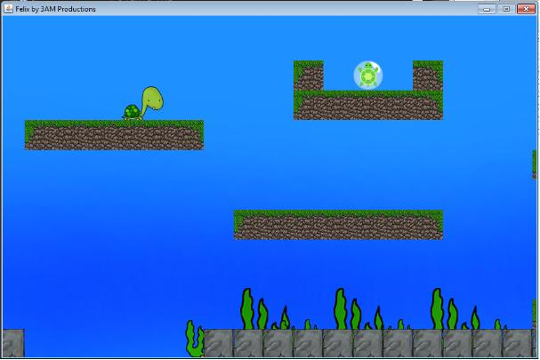
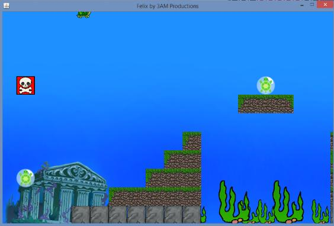
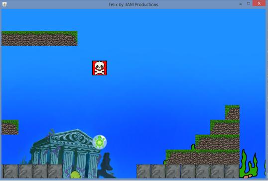
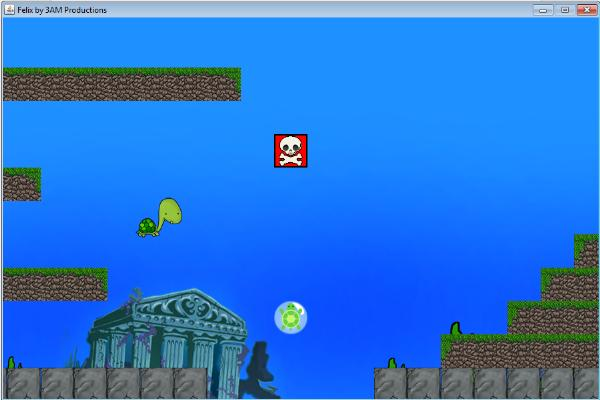

Ocean Levels
It is here that you will experience the familiar platform style game, and where most of the 'actual' gameplay will take place. There are several levels, each bringing along a different gaming experience. Good luck getting through all of them, as some can be really tricky!
Traversing the Oceans
Like any other turtle, Felix will be swimming through the ocean like it's nobody's business. But here are some ins and outs you should know before giving the ocean levels a go.
Throughout the various levels you will find many platforms and structures which you will be able to run into aimlessly, or use to get around. You can stand on tiles, jump on tiles, and run into tiles. However, you cannot jump through tiles, so you'll have to take the scenic route if you missed your jump onto a long platform.

Felix standing on a platform
The game includes various tiles, each used in different parts of the game. Here are some of the tiles you can expect to find scattered throughout the oceans.
A rock tile
An ice tile
FelixOutOfBoundsException
There are four ways to lose in the game, two of which will be discussed in this section. Both of these ways involve Felix going 'out of bounds', by either dropping too low in the map, or going too high. These two scenarios can be thought of as occurring as soon as Felix leaves the game panel. In reality there is a little wiggle room, but you should still try and avoiding reaching the extremities.If you do end up going out of bounds, you will be taken back to the word search. From there you can choose to redo the level, or try another one.

Felix in the upper end of the screen; one jump away from losing

Felix on the lower bounds of the game boundaries; no hope for him here
Your Goal
When you are inside the ocean levels, your goal is to collect all the 'Clue' tiles found scattered through the level. The 'Clue' tiles look like this:
A Clue Tile
When all the clue tiles are found, the you have successfully completed the level. You will be taken back to the word search to continue your journey!
Your Enemy
While you're on your hunt for those sweet looking 'Clue' tiles, you also need to be careful and do your best to avoid the 'Skull' tile. Touch one of those bad boys are your fun is over!
A Skull Tile

Choices, choices, choices...
Watch the Time
You last major enemy in the game is time itself. Each level has a certain amount of time for completion. If you cannot finish the level in the allotted time, your run will end and you will be taken back to the word search.
You can check how much time you have with the sidebar. There, you will be able to see useful information such as the time you have remaining, the amount of clue tiles you need in order to finish the level, and how many achievement tiles you have collected so far.